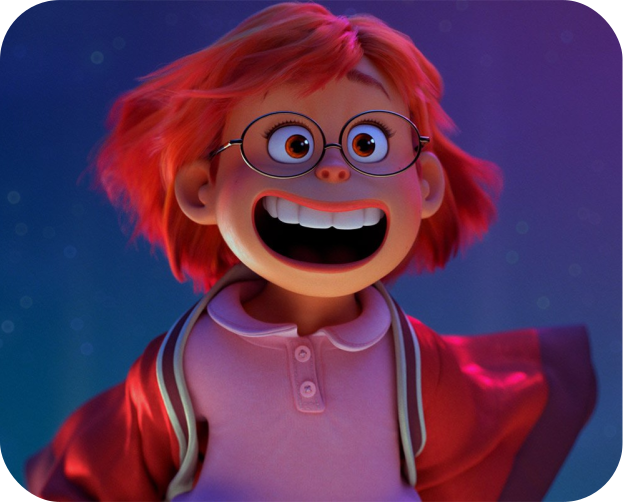
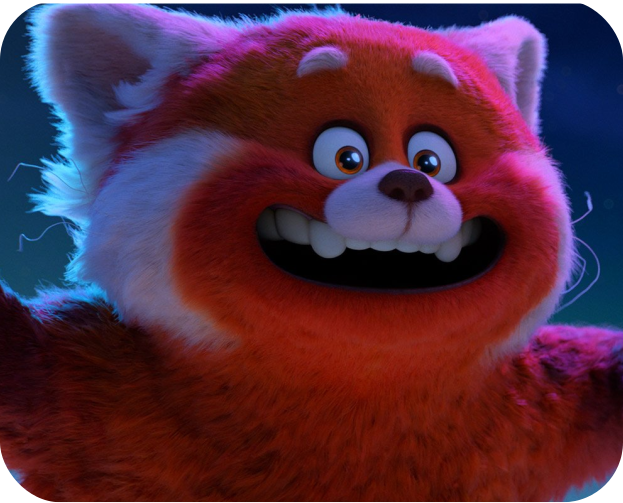

Meilin LeeExuberant, ambitious, and over-achieving, Chinese-Canadian Meilin Lee is a middle school force of nature. With her posse of loyal besties, Mei excels at school and obsesses over their fave boy band, 4*Town. At home with her mom, Mei is the dutiful and driven future keeper of the ancestral family temple. But when ancient magic turns Mei into a giant red panda, a gulf opens up between Mei and her mom, and forces a reckoning between Mei’s two selves: the obedient daughter and spirited teenager.

Red Panda MeiEight feet tall, wild, raging with hormones, fun-loving and destructive, Red Panda Mei represents Mei at her most emotional, messy, and true self.
“Chunky Cute”Set in Toronto, Canada, during the early 2000s, “Turning Red” gave the artists and filmmakers responsible for building the environments a clear jumping-off point: Toronto is a real place, after all. But while the city’s recognizable skyline, architecture style, street signs and Chinatown proved invaluable resources to filmmakers, their re-creation would be unique. For starters, it all had to be chunky cute. Says production designer Rona Liu, “We are looking at this world from a 13-year-old’s lens, so we rounded sharp corners and angles and didn’t taper shapes. Everything is round and pretty.”
TorontoToronto, Canada—hometown to director Domee Shi and the characters of “Turning Red”—is featured prominently in the film, calling for specific nods to iconic locales. But compared to the representation of New York City in “Soul,” “Turning Red” aims for a less realistic look. “It feels more like a very soft, colorful, magical, idyllic, almost youthful version of the city,” says executive producer Dan Scanlon.